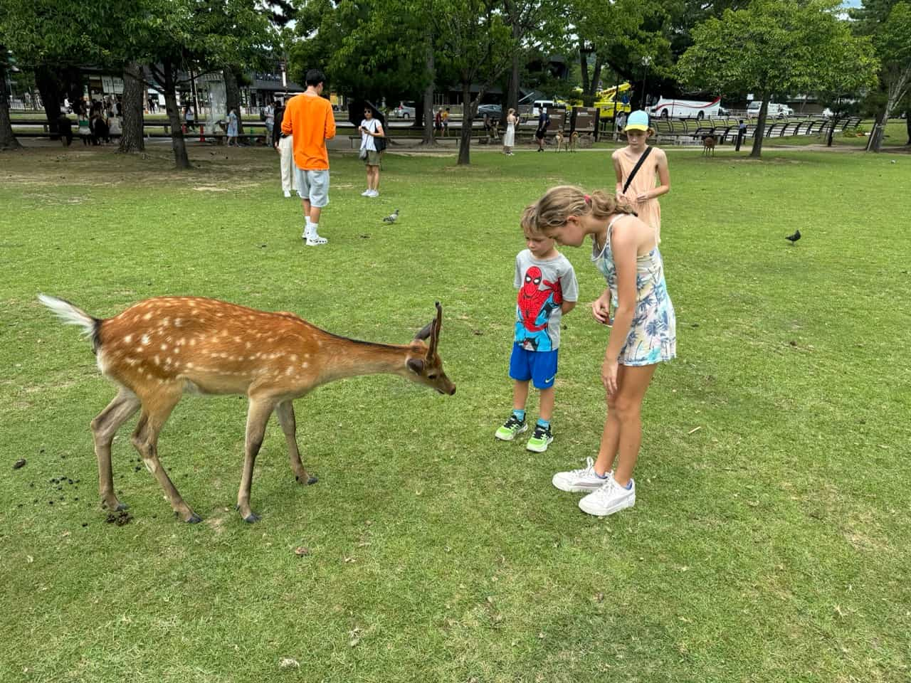
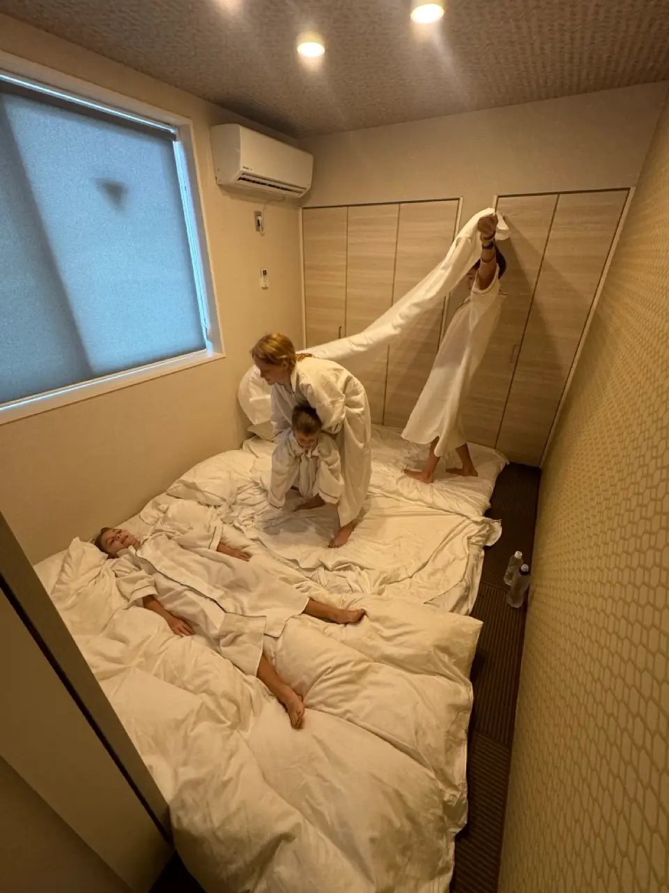
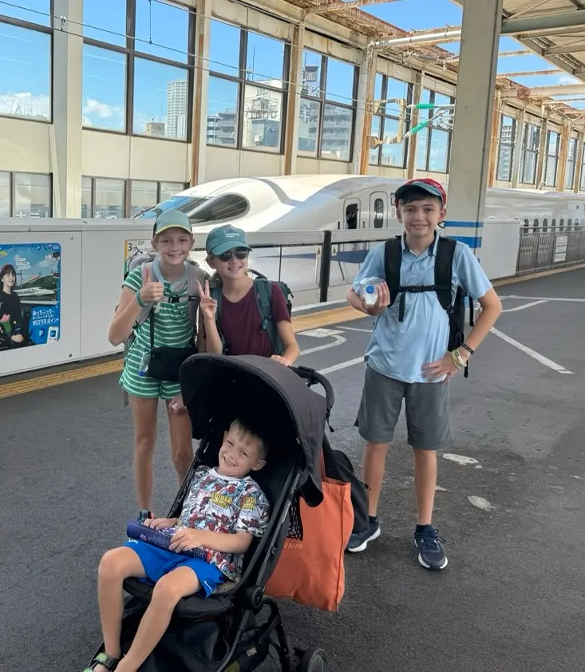
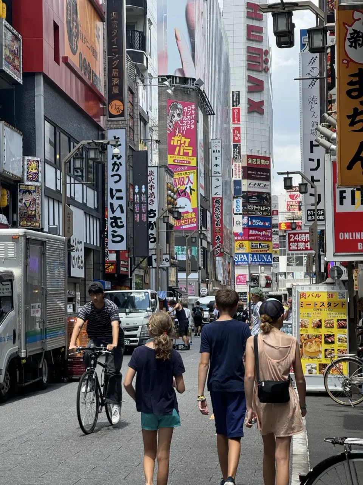

When we were in Japan the exchange rate was about 150 yen to an American dollar. One of my favorite parts about
Japan was the hundred yen stores, our favorite one, recommended by Mrs. Maggie was called Daiso. They are like the
better dollar store because it is less than an American dollar and have much better quality items. I got a new hat,
toe socks (socks where there is fabric between your big toes) and origami paper. I got all of this money by finding it
on the ground, Japan is supposed to be really clean but I think all of the tourists were not as tidy (I even found two
500 yen coins). The first city we visited in Japan was Osaka and at a park they had a really cool slide that had a
bunch of little rollers that were very fun to slide on. This was near the Osaka Castle which we walked all the way to
the top of and then back down. We loved the sushi and learned to use chopsticks throughout the trip. We liked the
lemon tea (also recommended by the Messers) and drank a lot of that. We went to an aquarium and saw whale sharks, some
of the largest species of penguins, dolphins and other fish. This is cool because in the beginning of the trip we saw
the smallest type of penguins, little penguins, in Melbourne, Australia.

We took a day trip to Nara, the ancient capital of Japan and visited a lot of temples. In Nara there was a park
filled with deer and they just like wandered around that area of the city. But people were selling deer biscuits and
you would take them, then bow to the deer and they would bow back to you, after that you would give them a piece of
deer biscuit. We enjoyed doing this and even saw some younger deer. While there we also encountered a mister which
had deer lounging underneath to keep cool. We also got to take a nice walk through a garden, which was relaxing.
Before we went home we saw more temples, a huge bell, more deer and ate octopus balls. Next we took the train back
to Osaka and got to see some fireworks. In our remaining time in Osaka we visited some shrines ate yummy food and me
and Adaira found a capsule by some capsule machines. We also got to visit a Pokemon center. After that we took a
train with these cool Japanese gardens to Kyoto.

In Kyoto we went to another Pokemon center visited yet more temples and went to a sushi conveyor belt. This was
a very fun experience, they had little tablets that you could order from except unfortunately when you do this a
person delivers it to you. They also had ginger tea to drink. There was one temple that had tatami mats and we had
to take off our shoes, the tatami mats were fun to slide on. At another place we walked through hundreds of tori.
In Kyoto while the grown-ups slept in a normal bed the big kids got to sleep tatami mats, they even gave us
pajamas (not to keep though). I also found this neck cooler thing that stays cool for a really long time. We also
saw a lot of these minka or traditional Japanese buildings. We enjoyed a walk through a bamboo forest, saw some
shrines, dipped our feet in a river and finally left Kyoto.

To get to our next city, Hiroshima, we took a bullet train, this was awesome and we had so much space. The
row of three seats on each side could swing around to face the row behind it and we got to Hiroshima so fast. We
did eat Mcdonald's on the bullet train, which is so much better in Japan than America. In Hiroshima we went to a
museum which was inside the Hiroshima Peace Memorial Park. It was all about destruction of the nuclear bomb and how it
should never be used again. It was very sad and scary. We also hiked on Miyajima island, and saw the torii gate at low
tide and then again at high tide surrounded by water.

After Hiroshima we flew to Tokyo. We saw the Shibuya scramble, which wasn't all that busy. We climbed
mini-mount Fuji, which were rocks they took from the real mountain. We enjoyed watching red bean paste desserts being
made, but when we proceeded to try one, they were not very good. We got to "drive" a self-driving monorail in the
front car, and saw the giant Gundam robot. We also went to the One Piece store, which was cool because we were
watching the series in Japan. Most of our food was from convenience stores, also called konbini, and we loved the
triangular rice balls called onigiri.